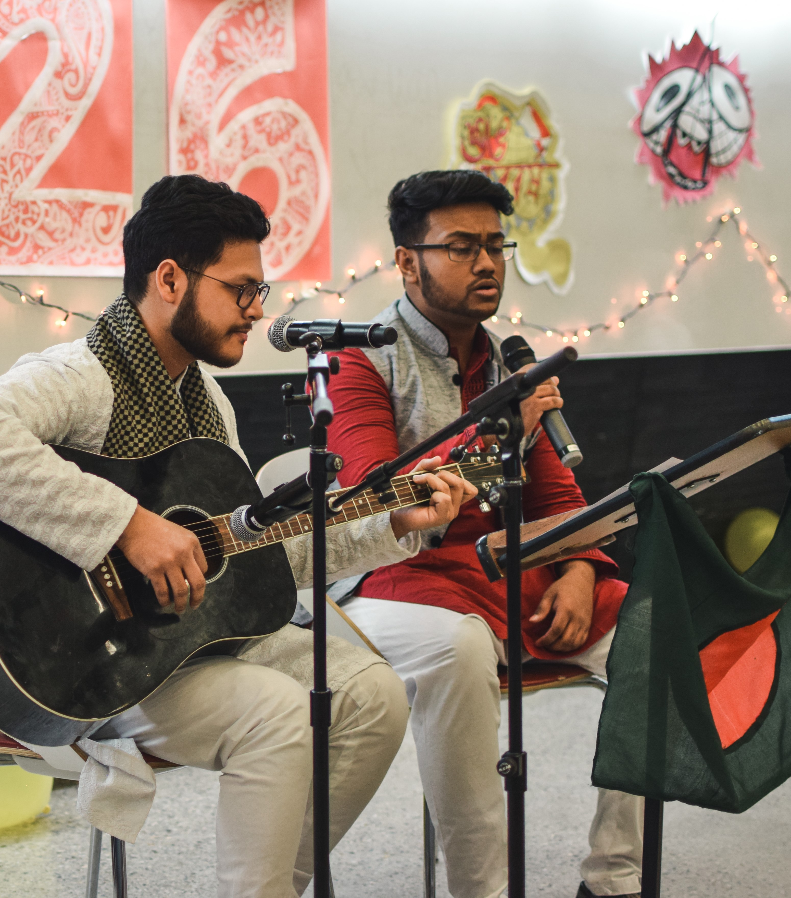
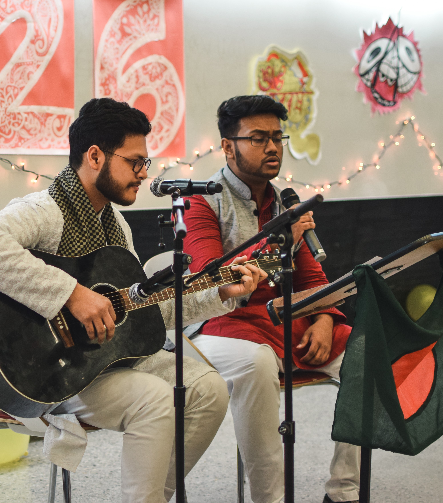
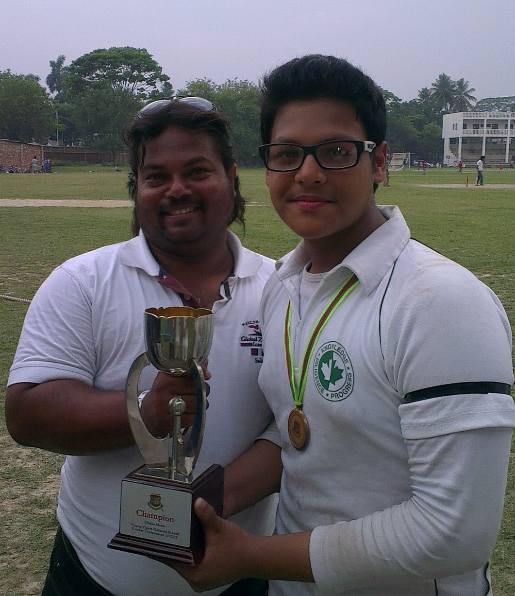
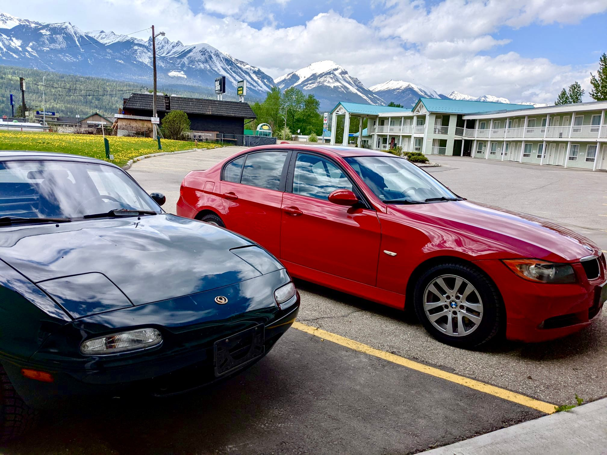
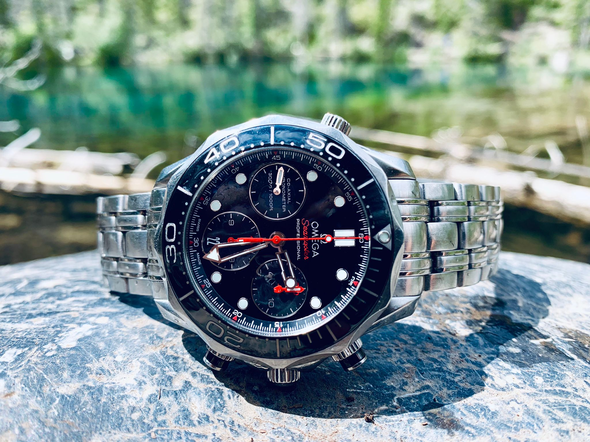

Since 7th June, 1998
Curious, motivated, and disciplined are the three words that perfectly define me.
I am a 4th year international student, studying Mechanical engineering with a minor in Digital engineering at the University of Calgary.
I have always dreamt big and tried to achieve all my goals or failed trying. At the age of 18, I co-founded a tutoring centre where I have
had the opportunity to tutor over 250 students from grades 5-8. I have also co-founded a nonprofit social welfare organization, Shudipto Foundation,
in order to make the lives of the underprivileged of Dhaka, the capital of Bangladesh, a bit more liveable.
Additionally, during my last 3 years at the Schulich School of Engineering I have been involved in various club activities that helped me grow new
skills and enhanced my pre-existing skills. I was the co-president of the Bengali Students’ Society (BSS) where I had to oversee all the club
activities, make important decisions and organise numerous engaging events to serve the local as well as international bengali student community.
I was a member of the Mechanical Sub-Team for Relectric where I have had the opportunity to work alongside my peers in building an electric
conversion technology for gasoline vehicles. Currently, I am a part of the SchulichDinobytes where my main role is to research on computer
vision and AI and its implementation on NAO robots.
As you can guess by now, I never sit idle, I just cannot. From all my involvements over the years, I have built a strong grasp over time management,
workload management as well as public speaking. Leadership is deeply rooted within me. However, being a great team player has always helped me in
my pursuit of success.
 

Belonging to a family who appreciated art, I was always drawn to music.
My father bought me my first guitar back in
2011, but he refused to get me into guitar training as he believed it would hamper
my studies. But YouTube had all the lessons I needed to learn and master the skill
of guitar playing. I am a self taught guitar player and singer and I have been
practicing since 2011. I did receive a lot of appreciations and appraisals from friends,
family and my school events where I performed. But I realized my actual talent after winning
the “Desi’s Got Talent”, a show hosted by the Indian Students’ Association (ISA) and the
Bengali Students’ Society (BSS) in 2019 at the University of Calgary. Later, I was invited to
multiple events and Radio shows to perform and showcase my talent.

Cricket is in my blood. All 5 of my maternal uncles were professional Cricket players and I
followed their footsteps from as early as 4 years old. I have played multiple tournaments representing
my school back in my home country and won a handful of awards too. Currently, I am a right hand medium
fast bowler for St. Johns 1
cricket team and competing against other Calgary District Cricket League
(CDCL) teams.
My friends introduced me to squash in my first year at UCalgary, and since then it has been my most
favourite sport. The worst part about the pandemic for me personally, was not being able to play the
sport I love the most. Additionally, Football, badminton, table tennis, and tennis are also sports I am good at.
If you play any of these, we can be best friends!

I was introduced to Initial D by my cousin which got me highly interested in Japanese
cars. That, followed by “The Fast and the Furious: Tokyo Drift” turned me into a Japanese sports car fanboy. I love working
on cars and helping out my friends and family in repairing and maintaining their cars. Recently, my friend and I flew to
Vancouver to get our summer cars from there. My friend got himself a 1994 Mazda Miata MX-5 and I went european this time
around with a 2008 BMW 323i. My dream car is a 1998 Nissan Skyline GTR R34, however with the prices skyrocekting I might be better off
buying a lamborghini.

My love for watches sparked when I saw my grandfather’s 1966 Omega constellation
with a piepan dial. The patina, petite size and the complicated hand winding movement
awed me greatly. I got into collecting watches right after I started earning from my tutoring
centre. Initially most of my watches were seikos and orients, however, soon enough I dived into
the swiss territory. I got my first luxury watch: Omega Seamaster Professional 300m Chronograph
back in 2017 and it was one of the proudest moments in my life till date. It is a memoir of how strong
dedication can lead to big accomplishments. My dream watch is a 5711 Patek Philippe Nautilus